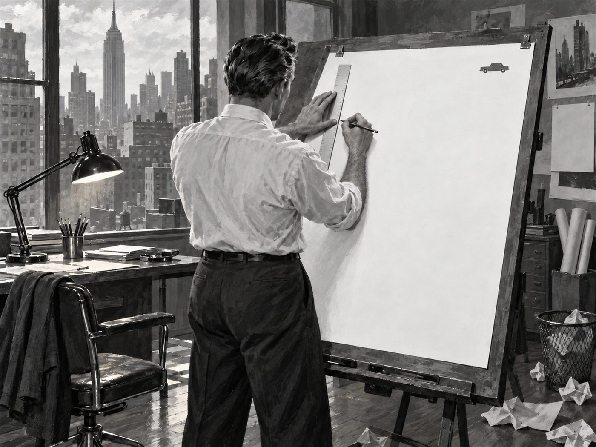

광고·마케팅 업계 뉴스 · 발행인 SM C&C 윤석진
넓은 여백 속 작은 차 한 대로 광고의 문법을 바꾼 사람

독자 여러분, 오늘은 광고 지면의 '모양'을 바꾼 아트디렉터 헬무트 크론을 소개합니다. 그는 빌 번벅이 이끌던 DDB에서 일하며 카피와 그림이 한 몸처럼 움직이는 광고를 만들었습니다. 대표작은 폭스바겐의 'Think Small'(1960)입니다. 넓은 흰 여백 한구석에 작은 자동차 하나, 그 아래 짧은 헤드라인과 본문. 크고 화려한 차를 자랑하던 시대에 '작다'는 약점을 정면으로 꺼내 보인 이 레이아웃은 지금도 광고 교과서에 실립니다. 렌터카 회사 에이비스의 '2등이라 더 열심히 한다'는 캠페인도 그의 손을 거쳤습니다. 그는 '새로움'만을 진짜 가치로 여겼다고 전해집니다. 템플릿과 AI 시안이 넘치는 요즘, 익숙한 배치부터 의심하던 그의 고집은 아트디렉터뿐 아니라 모든 광고인에게 여전히 유효한 질문입니다.